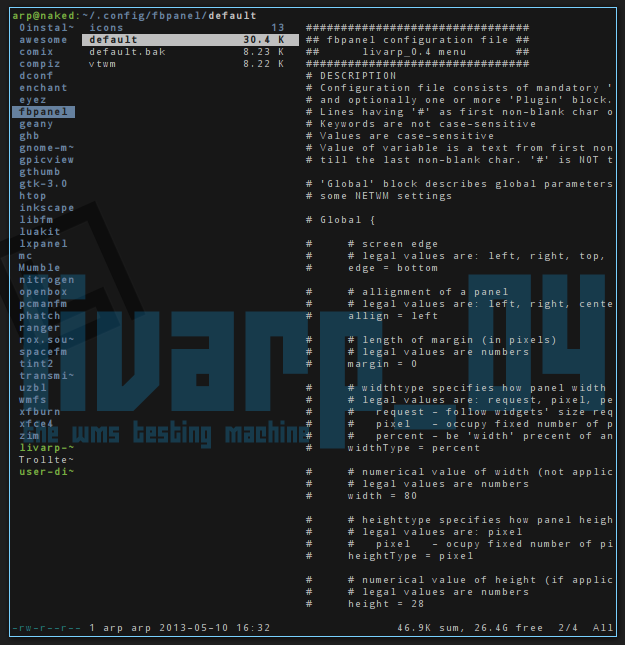
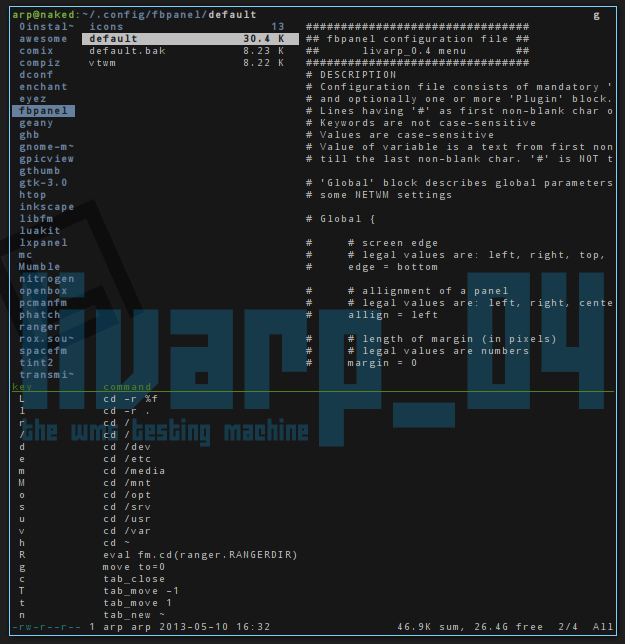

lang fr|gb

ranger: navigateur de fichier en console
ranger est un navigateur de fichier écrit en python adoptant les raccourcis clavier de vim. très léger, il n'en est pas moins hautement configurable: definitions des raccourcis, des applications associées aux types de fichiers, utilisation de scripts externes…
ranger utilise les raccourcis vim mais aussi mc:
ranger utilise les raccoucis vim pour les actions et la navigation ainsi que les flêches directionnelles.
yy copy
pp paste
dd cut
/ recherche
n rechercher le suivant
….
le plus de ranger est qu'il propose une organisation en colonnes qui permet de visualiser l'arborescence des dossiers mais aussi les fichiers textes directement.
ranger offre une aide directe dans la fenêtre du terminal: lorsque vous démarrez un keybind, ranger vous donne les combinaisons possibles: ici, en commencant par 'g'
ranger supporte les bookmarks: placez-vous dans un dossier, puis appuyez sur 'm', ranger vous demande alors de taper une autre lettre qui servira d'identifiant au bookmark. il vous suffit ensuite de taper " ' " puis votre lettre identifiante pour accéder aux raccourcis configurés.
ranger gère les onglets: pour ouvrir un onglet "gn" pour naviguer entre les onglets " g'n' " ou [Tab]

la configuration de ranger passe par l'édition des fichiers contenus dans ~/.config/ranger/ . vous pourrez déterminer les applications associées aux fichiers, le nombre de colonnes affichés, les raccourcis etc ...